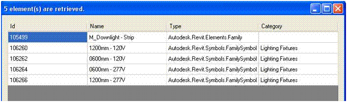

Filter for a Family
We already discussed the topic of family category and filtering previously, but this question keeps cropping up anyway, so here is a repetition from a slightly different point of view by Saikat Bhattacharya.
Question: I am trying to get the loaded families with a LightingFixtures category. However, I am not getting the results I expected. I used the following code:
Autodesk.Revit.Creation.Filter cf = app.Create.Filter; Filter f1 = cf.NewTypeFilter( typeof( Family ) ); Filter f2 = cf.NewCategoryFilter( BuiltInCategory.OST_LightingFixtures ); LogicAndFilter f3 = cf.NewLogicAndFilter( f1, f2 ); List<Element> a = new List<Element>(); doc.get_Elements( f3, a ); foreach( Family f in a ) { Util.InfoMsg( f.Name ); }
No elements are returned from the Document using this filter. So, I retrieved all the families instead and checked if the category name of the family is "Lighting Fixtures". This is language dependant and consumes long time. How can I achieve this using filters?
Answer: As mentioned in the discussion on family category and filtering, the Family class does not implement the Category property for all family files. Therefore, you cannot use a category filter to identify family files.
If you retrieve all family files and check their category using some other means, like in you the workaround you describe, you can enhance performance and avoid the language dependence by comparing the category element id instead of its name string.
By the way, you can always manually test and interactively simulate the result of any API filter by using the Revit SDK sample ElementsFilter. For a quick test, load a lighting fixture family into a new Revit document and run this sample with a family filter selecting the lighting fixture family. The following results show the Category as blank for the Family element:

Instead of creating a filter using Family and Category, you can also change it to FamilySymbol and Category to obtain the symbols instead of the family elements. The Category property is always defined for family symbols. If you need the families, they are accessible from the symbols as well. If you simply replace typeof( Family ) by typeof( FamilySymbol ) in the definition of the filter f1 in the code above, it works fine.